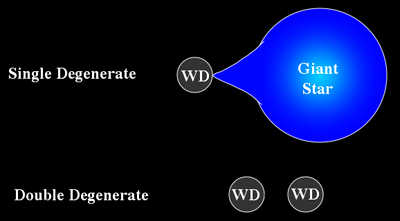

Core-Collapse and Thermonuclear Supernovae#
Notes partially following Onno Pols Lecture Notes Sec: 13.2-13.2.
Monday, Apr. 14, 2025
astrophysics of stars and planets - spring 2025 - university of arizona, steward observatory
Today’s Agenda#
Announcements - You can drop 2 past ICAs (2m)
Reading Overview/Key Points (10m)
ICA 24 (25m)
Debrief + Share Results (10m)
Core collapse and explosion of massive stars#
The collapse of the iron core#
For stars massive enough to form an iron core (\(M_{\rm{ZAMS}}\gt \sim 11M_{\odot}\)) they will end their lives as core-collapse supernovae. We can highlight to two processes that contribute to the dynamical collapse of an iron core:
Electron captures
at high density, free electrons can be captured via inverse \(\beta\)-decay - as a result, the core becomes more neutron rich - a process called Neutronization.
The Chandrasekhar mass for a predominantly \(^{56}\rm{Fe}\) core is given by:
Recall \(\mu_{e}\) is the ratio of the total number of nucleons (protons plus neutrons) contained in all nuclei to the total number of free electrons in any sample of the material. Electron captures reduce the number of free electrons, thus increasing \(\mu_{e}\), and decreasing the Chandrasekhar mass.
This alone can push the iron core over the critical mass for collapse.
Observation 14
Electron captures can also facilitate the collapse of stars with \(M_{\rm{ZAMS}}\lt \sim 11M_{\odot}\) but develop degenerate O-Ne cores, if this core exceeds the Chandrasekhar mass it can produce an electron-capture supernova explosion.
Photo-disintegration
the pre-collapse, but contracting core can reach temperature of \(T\sim10^{10}\) K and cause energetic photons to break up heavy nuclei into lighter ones.
This process takes about 2 MeV per nucleon and is eventually absorbed by the radiation field. The net result is a drastic increase in pressure, potentially triggering the free-fall collapse of the core.
Steps of collapse:
The collapse is extremely rapid, \(\sim 10\) ms (recall our dynamical timescale and typical core density \(\rho \sim10^{10}\) g cm\(^{-3}\)).
Photo-disintegration and electron captures continue due to increases photon energies and density. Leading to further neutronization of the core.
The temperature and pressures rise, but not enough to halt collapse until nuclear densities are reached \(\rho \sim10^{14}\) g cm\(^{-3}\)).
The composition becomes predominantly neutrons, modifying the equation of state, the gas becomes nearly incompressible and the nascent proto-neutron star halts collapse at a radius of about 20 km.
Energetics:
We can estimate the gravitational energy released during the collapse:
for homologous collapse of a 1.4\(M_{\odot}\) core from 3000 km to 20 km.
We can compare this to the energy needed to unbind the stellar envelope:
the upper limit for this is about 10\(^{53}\) erg but for a realistic mass distribution mmore like 10\(^{50}\) erg, suggesting only a small fraction of the energy in the collapse of the core is needed to unbind the star.
Some of the explosion energy goes into kinetic energy with ejecta velocities on the order of 10\(^{4}\) km / s, giving \(E_{\rm{kin}} \sim 10^{51}\) erg and into radiation with \(E_{\rm{ph}} \sim 10^{49}\) erg.
To summarize:
and
The explosion mechanism#
At densities of \(\rho \sim 3\times \sim10^{14}\) g cm\(^{-3}\)), the neutrons become degenerate, leading to an increase in pressure, and the strong nuclear force between nucleons becomes repulsive halting further collapse.
Core Bounce: When the inner core is compressed to about a few times nuclear density it recoils like a spring causing the core bounce.
The velocity of the inner core is reversed due to the bounce and travels towards still infalling material of the outer core.
As these material impact each other, the supersonic material creates a shock wave that steepens as it moves outward into lower density.
Observation 15
The kinetic energy stored in this shock was once thought to be enough to unbind the stellar envelope and give rise to a “prompt explosion”.
We now know that two things limit the prompt explosion scenario:
Energy is removed via photo-disintegration of the infalling iron group nuclei.
Electron captures onto free protons behind the shock produce energetic neutrinos which carry away about 90% of the energy released in the collapse.
The shock wave in this scenario fizzles out and no explosion occurs.
The delayed-neutrino mechanism#
During collapse, the core eventually becomes opaque for neutrinos and they are trapped.
They can only diffuse out via many scattering events. As a result, we can define the neutrinosphere.
Neutrinosphere - the outer layers of the core where the density is low enough for neutrinos to escape. Within this radius is a neutrino trapping surface. The trapped neutrinos provie and energy source to revive the shock and lead to explosion.
Neutrino heating - neutrinos able to diffuse out of the core heat the region where the shock has already passed (the post shock region) - from about 30 km to 100-300 km.
This region becomes convectively unstable.
This provides a way to convert thermal energy deposited by the neutrinos into kinetic energy potentially leading to revival of the stalled shock overcoming ram pressure to lead to successful explosion.
from IPython.display import YouTubeVideo
YouTubeVideo('bxKwMGgAkdQ', width=800, height=600)
Type Ia supernovae - How to ignite a white dwarf#
These explosions are not associated with the core-collapse of a massive star.
Instead, they are caused by the thermonuclear explosion of a CO white dwarf reaching a critical mass for carbon ignition.
Ignition#
Carbon-burning can occur at low temperatures, such as white dwarfs, if the central density is sufficiently high. This is often reach for a near Chandrasekhar mass white dwarf of 1.4\(M_{\odot}\).
Because the gas is strongly degenrate the carbon-burning is unstable and leads to a large increase in temperature at constant density and pressure.
Burning#
The ignition of carbon thus causes all of the material in the core to be transformed into Fe-peak elements in nuclear statistical equilibrium.
An explosive burning flame front propagates outward, behind which material undergoes explosive nuclear burning.
Ashes#
The composition of the resulting ash depends on the temperature behind the flame front, in the central part it is primarily \(^{56}\rm{Ni}\) and leads to progressively light elements (Ca, S, Si, and others). The total energy released by the burning is about \(10^{51}\) erg, sufficient to unbind the entire star and no remnant is left behind.
{kind=link}
The single degenerate scenario#
In this scenario, a white dwarf accretes H- or He-rich material from a non-degenerate binary companion star - a main sequence star, red giant, or helium star.
Problems with this scenario:
The mass transfer of H/He that can facilitate steady burning and growth of the mass of the WD towards its Chandrasekhar mass is very narrow.
too fast: a H-rich envelope would form on the WD and be seen observatioanlly - its not.
too slow: the matter burns in an unstable manner and leads to a nova outburst, that limits mass growth.
YouTubeVideo('9BPxc5-9M-4', width=800, height=600)
The double degenerate scenario#
In this scenario, the resulting merger product exceeds the Chandrasekhar mass and ignites the WD.
These systems would be formed in close binary systems underoing common envelope evolution followed by orbital decay due to gravitational radiation.
Main challenges is the nature of the burning of the merger product: is it enough to unbind the the WD or does it lead to core-collapse.
YouTubeVideo('0AAPwsST9WQ', width=800, height=400)
In-Class Assignment 24#
In-Class Assignment 24 can be found here.